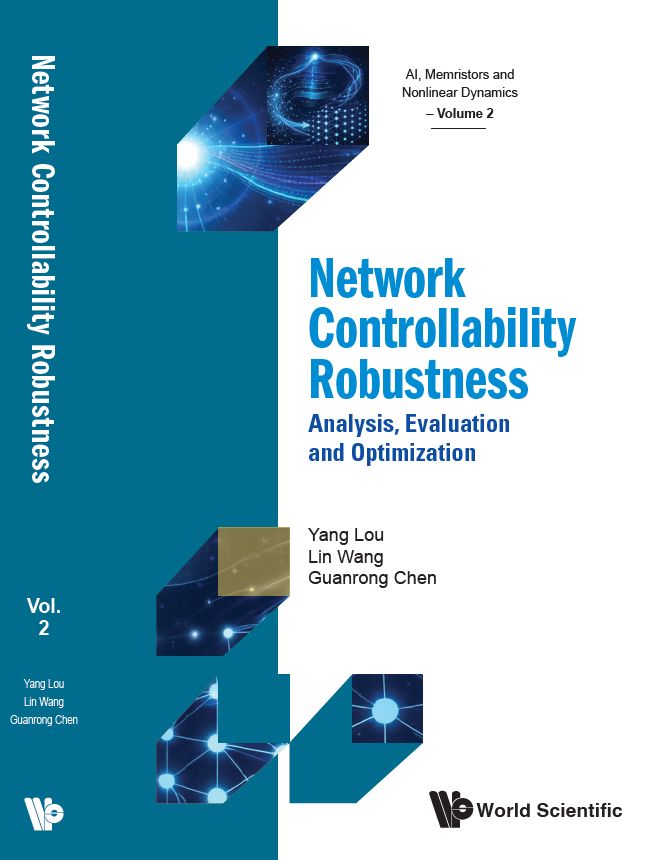

Contact
Email: ylou[at]hiroshima-u.ac.jp
Hiroshima University
1-7-1 Kagamiyama, Higashi-hiroshima City
Hiroshima Prefecture 739-8521
Japan

Principal Investigator
PhD Students
Master Students
Alumni

Prospective Ph.D., M.Sc., and Postdoctoral applicants are welcome. Please send your CV, transcripts (including GPA), and proof of English proficiency by email.
Email: ylou[at]hiroshima-u.ac.jp
Hiroshima University
1-7-1 Kagamiyama, Higashi-hiroshima City
Hiroshima Prefecture 739-8521
Japan